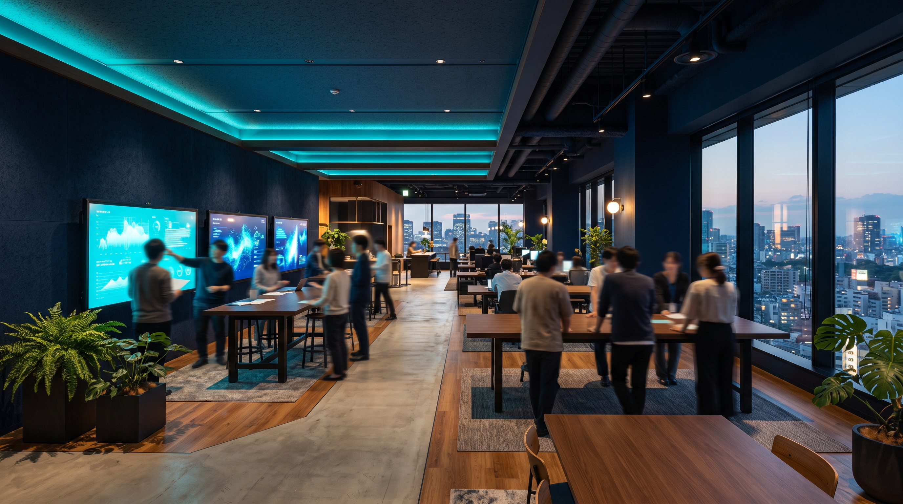

INTERVIEW
Corporateコーポレート／総務
みんなが働きやすい環境を、仕組みから整える。
PROFILE STORY
01CAREER STEP
これまでのキャリア
〜2017前職で、総務・労務に関する事務全般を経験。
2017PAL入社。総務業務全般を担当。
NOWコーポレート本部 総務課／課長。日常業務の管理に加え、業務改善や仕組みづくりに取り組む。
02JOINING STORY
PALに入社した理由
家庭を大切にしながら、自分も成長できる場所を探していた。子育てをきっかけに、仕事と家庭を両立できる働き方を考えていたとき、知人の紹介でPALを知りました。面接では、実際に子育てと仕事を両立しながら活躍されている方のお話を伺い、ここなら家庭を大切にしながら自分自身も成長していけるのではないかと感じ、入社を決めました。
03WORK PHILOSOPHY
仕事で大切にしていること
離れた場所の人にも、できるだけ迅速に回答する。リモート勤務や各拠点の現場担当者など、離れた場所にいる方との連絡は基本的にチャットが中心となるため、できるだけ迅速に回答することを心がけています。
01
WORK
日常を支えながら、仕組みも少しずつ変えていく。
現在担当している総務の仕事内容を教えてください。
社宅、社用車、通信、各種保険、事故対応、資産管理などの日常的な総務業務の進捗管理や、会社の登記関連業務やプライバシーマークの維持等、幅広い業務を担当させて頂いています。社員が日々働くために必要な業務と、会社運営に関わる業務の両方があります。
日常業務を正確に進めるだけでなく、社内申請のシステム化や業務フローの見直しなど、会社全体の生産性向上につながる仕組みづくりにも取り組んでいます。
日々の会社運営を支える業務と、生産性向上につながる仕組みづくりの両方を担当する。
- 01社宅・社用車
- 02通信・各種保険
- 03事故対応
- 04資産管理
- 05登記関連業務
- 06プライバシーマークの維持
- 07社内申請のシステム化
- 08業務フローの見直し
02
VALUE OF WORK
「処理する」から、「より良くする」へ。
総務の仕事で、特にやりがいを感じるのはどんなときですか？
チームで協力して何かをやり遂げたときや、社員の困りごとを解決できたとき、業務改善によって仕事がスムーズに進むようになったときです。
03
FIELD
本社にいるだけでは、見えないことがある。
これまでの仕事で印象に残っている出来事を教えてください。
現場への応援や見学を通じて、本社にいるだけではわからない現場の状況や課題を知ることができ、実際に現場を見ることの大切さを感じました。
総務の業務でも、実際に働く人がどのような環境にいるのかを知っておくことは大切だと感じています。

VALUE
自分で対応するだけでなく、
チームとして成果を出すことの
大切さを学んでいます。
— M.K / コーポレート本部 総務課
04
TEAMWORK
離れていても、すぐに返す。
他部署の方とは、普段どのように関わっていますか？
現場とは、備品や制服、通信、社宅、社用車などに関する日常的な業務で関わっています。
また、コーポレート本部内の経理・労務部門やシステム部門とは、社内申請の効率化や業務フローの見直しなど、業務改善に向けて連携しています。総務の仕事は、社内のさまざまな部署につながっています。
リモート勤務や各拠点の現場担当者など、離れた場所にいる方との連絡は基本的にチャットが中心となるため、できるだけ迅速に回答することを心がけています。
05
GROWTH
自分の仕事から、チームと会社全体を見る仕事へ。
PALに入社して、成長したと感じることはありますか？
入社当初は、自分が担当する業務を正確に進める事が中心でしたが、現在は部署全体や会社全体の視点で物事を考える機会が増えました。
また、総務課のマネジメントを任せていただく中で、自分で対応するだけでなく、チームとして成果を出すことの大切さを学んでいます。
PALには、個性豊かで前向きな方が多いと感じています。チームのメンバーをはじめ、一緒に働く方々に恵まれており、また、困ったことがあれば気軽に相談できる環境があります。
06
WORK & FAMILY
限られた時間だからこそ、仕事の進め方を工夫する。
子育てと仕事を両立するうえで、工夫していることを教えてください。
家庭の事情に応じて勤務時間や休暇について相談できる環境は、とてもありがたいと感じています。
一方で、自分自身も限られた時間の中で、どうすれば効率よく仕事を進められるかを考えて工夫することを大切にしています。
07
FUTURE
働きやすい環境を、これからも整えていく。
今後チャレンジしてみたいことや目標を教えてください。
会社の成長に合わせて業務をより効率的にし、みんなが働きやすい環境をつくっていきたいです。
また、総務メンバーそれぞれの強みを活かしながら、一緒に成長していけたらと思います。
08
WHO FITS
現場を支える立場だからこそ、自分から動ける方へ。
PALのコーポレート業務に向いているのは、どのような人だと思いますか？
コーポレート部門は、現場を支える立場にあるため、周囲の人をサポートすることにやりがいを感じられる方や、自ら課題を見つけ、改善に向けて行動できる方が向いていると思います。
A DAY IN THE LIFE
総務の1日。
日常業務の進捗を見ながら、関係部署との打ち合わせや中長期的な課題にも取り組む一日です。ここで紹介しているのはM.Kさんの一例で、PAL全社やコーポレート本部全員の勤務時間・勤務形態を示すものではありません。
- 業務開始
メール・チャットを確認し、当日の業務や優先順位を整理します。
- チーム・日常業務
メンバーとの情報共有、日常業務の進捗確認・対応を行います。
- 他部署との連携・課題対応
関係部署との打ち合わせ、日常業務や中長期的な課題への対応を行います。
- 進捗整理・退勤
案件の進捗を確認し、翌日の業務を整理して退勤します。
MESSAGE
これからPALに応募する方へ、メッセージをお願いします。
自分の考えや提案を、
実際の取り組みにつなげられる。
PALには、自分の考えや提案を発信し、実際の取り組みにつなげられる環境があります。
周囲と協力しながら、新しいことにも前向きに挑戦したいという方にとって、やりがいを感じられる職場だと思います。
— M.K / コーポレート本部 総務課（2017年入社）
RELATED
他の社員インタビューも見る
職種によって、仕事の進め方も向き合い方も違います。気になる仕事から、ほかの社員の話もご覧ください。